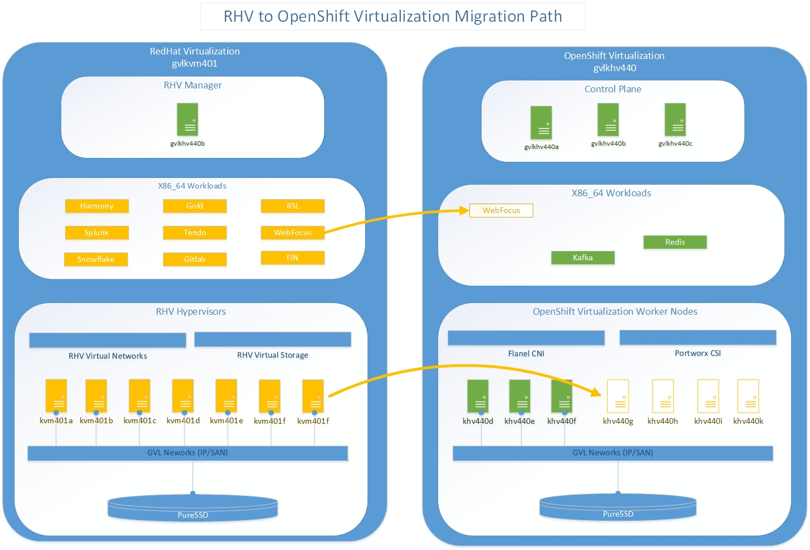

Outside-course work · Technical strategy
Linux Platform Migration Strategy Overview
A strategy document proposing a phased migration from Red Hat Virtualization to OpenShift Virtualization, with attention to operational risk and reuse of existing infrastructure.
1. Executive Summary
Red Hat Virtualization (RHV), the platform currently hosting ACME’s Linux virtual workloads, reaches end of life in August 2026, after which vendor support, security updates, and defect remediation will no longer be available. Continuing to operate RHV beyond this date exposes ACME to unacceptable operational, security, and compliance risk.
Over the past 24 months, the COMPOS engineering team has evaluated multiple replacement options and conducted extensive proof-of-concept testing. Based on this work, the team recommends Red Hat OpenShift Virtualization as the strategic replacement platform for ACME’s virtual Linux workloads. OpenShift Virtualization is Red Hat’s designated successor to RHV and is aligned with the industry-wide transition from traditional KVM-based virtualization to Kubernetes (kubevirt)-based platforms.
In addition to addressing the immediate end-of-life risk, migrating to OpenShift Virtualization positions ACME on a modern, vendor-supported platform that is better aligned with emerging technologies, including AI-enabled infrastructure capabilities, advanced automation, and long-term ecosystem investment by Red Hat.
The proposed approach minimizes risk and cost by:
- Leveraging Red Hat–provided migration tooling
- Reusing existing RHV hypervisor hardware as OpenShift worker nodes where feasible
- Requesting limited net-new capital
- Performing phased, low-risk migrations beginning with non-production workloads
2. Background and Current State
2.1 Existing Platform Overview
The current Red Hat Virtualization (RHV) platform supports a large, diverse, and business critical Linux workload footprint, consisting of more than 100 applications across approximately 750 servers. These workloads span multiple functional domains, including:
- Web and application servers
- Batch processing and ETL workloads
- Middleware and messaging platforms
- Observability, monitoring, and analytics systems
- Software development and CI/CD infrastructure
- Platform management and operational tooling
The breadth and performance sensitivity of these workloads required a deliberate and cautious evaluation of replacement platforms. As part of this effort, ACME partnered with Red Hat and Portworx to conduct a proof of concept (POC) evaluation of OpenShift Virtualization. This evaluation included extensive load and performance testing.
The environment currently supports multiple Linux distributions and versions, including:
- Red Hat Enterprise Linux (6, 7, 8, 9)
- Ubuntu (18.04, 20.04, 22.04, 24.04)
- SUSE Linux Enterprise Server (12, 15)
While ACME continues efforts to retire older and unsupported operating system versions, some workloads remain pinned to specific releases due to application or vendor requirements. As a result, continued support for legacy operating systems is a necessary consideration during the platform migration, and this requirement has been validated as part of the OpenShift Virtualization evaluation.
2.2 Pain Points and Limitations
Red Hat Virtualization has served ACME reliably for many years, providing stable operations, reasonable licensing costs, and effective vendor support. The platform has successfully supported all required application workloads without platform driven production outages, and it has been well integrated into ACME’s automation and lifecycle management processes.
However, two material factors now necessitate a platform change:
- End of Life Risk -- Red Hat Virtualization reaches end of life on August 31, 2026, after which the platform will no longer receive vendor support, security patches, or defect remediation. Continuing to operate RHV beyond this date would place ACME on unsupported infrastructure, materially increasing operational, security, and compliance risk.
- Strategic Platform Direction -- The Linux ecosystem is shifting toward Kubernetes native (kubevirt based) virtualization platforms, with leading vendors focusing future innovation and investment in this area. While KVM-based platforms remain available, they are no longer the primary focus for new capabilities. Migrating to OpenShift Virtualization aligns ACME with Red Hat’s strategic roadmap and ensures continued access to modern platform capabilities, including automation and AI enabled infrastructure features.
3. Target State Vision
3.1 OpenShift Virtualization
The target state for ACME’s virtual Linux workloads is Red Hat OpenShift Virtualization, Red Hat’s designated successor to Red Hat Virtualization (RHV). This platform provides a supported, modern foundation for ACME’s current workloads while aligning with Red Hat’s long‑term product roadmap and continued investment in automation, resiliency, and emerging capabilities.
To support a controlled and low-risk transition, the COMPOS engineering team proposes a short-term Virtual Migration Assessment (VMA) engagement with ShadowSoft. This engagement provides an independent, expert-led review of workload characteristics, migration sequencing, and platform design, helping ensure the OpenShift Virtualization environment is implemented according to enterprise best practices. While this is a paid engagement, it materially reduces execution risk and accelerates time to steady state operations.
OpenShift Virtualization includes native migration tooling specifically designed to move workloads from RHV, enabling phased migrations with minimal downtime and reliable rollback options. This allows ACME to execute the replatforming effort in a cost-effective and risk-managed manner by combining targeted new hardware investments with reuse of existing infrastructure.
The primary capital request is for net-new control plane nodes, which have distinct lifecycle and availability requirements and are not well suited for reuse from the existing RHV environment. Existing RHV hypervisors can be repurposed as OpenShift Virtualization worker nodes, allowing ACME to migrate workloads incrementally while extending the value of current hardware investments.
This approach enables ACME to:
- Fully evacuate RHV before end of life‑of‑life
- Avoid replacing all 24 hypervisors at once
- Lifecycle worker nodes gradually as they reach 5–7 years in service
- Minimize upfront capital spend while maintaining platform stability
4. Scope and Assumptions
4.1 In Scope
The scope of this migration includes all existing server-based Linux workloads currently running on Red Hat Virtualization. Based on validation work completed with Red Hat and Portworx, these workloads are expected to run successfully on OpenShift Virtualization without material performance impact.
This includes legacy workloads:
- RHEL 6 guests, which are supported for migration by Red Hat
- Mixed workload profiles with varying I/O and performance requirements
Performance testing conducted during the proof-of-concept phase confirmed that storage and I/O performance in OpenShift Virtualization is comparable to the existing RHV environment. As a result, no functional or performance-based exclusions are anticipated for standard server workloads.
4.2 Out of Scope
A small number of vendor supplied virtual appliances are excluded from the OpenShift Virtualization migration. These exclusions are not due to operating system or platform limitations, but rather vendor support policies that do not currently extend to kubevirt based environments.
Out of scope workloads include:
- IBM Virtual HMCs (2)
- ExtraHop appliances (4)
- Aruba appliances (2)
- F5 BigIQ (1)
- ClearPass appliances (6)
These represent a limited and well-defined subset of the overall virtualization footprint.
Mitigation approaches:
Several straightforward and low risk options exist to support these appliances outside of OpenShift Virtualization:
- Migrate to Nutanix Acropolis (KVM based) where appropriate
- Deploy a small RHEL based KVM cluster using existing or repurposed hardware
- Deploy a small Proxmox KVM cluster for appliance hosting
These options leverage proven technologies, require minimal infrastructure, and allow ACME to maintain vendor support without impacting the broader OpenShift Virtualization migration.
5. Migration Approach
5.1 Migration Strategy
Although OpenShift Virtualization (kubevirt) and traditional KVM based virtualization differ architecturally, the operational model at a high level is familiar and consistent with our current environment. The migration will leverage a combination of existing and newly provisioned hardware while continuing to consume shared storage and network services in a manner consistent with Red Hat Virtualization (RHV).
Importantly, the OpenShift Virtualization platform integrates with our existing configuration management, automation, and lifecycle tooling, minimizing changes to operational processes and reducing the effort required to transition from initial implementation to steady state (Day 2) operations, including monitoring, patching, backup, and recovery.
This approach allows the team to focus on controlled workload migration rather than wholesale changes to operational practices.
5.2 High Level Migration Plan
Non-Production Migration‑Production Migration
- Establish the OpenShift Virtualization foundation -- Deploy an initial OpenShift Virtualization cluster with a properly sized and resilient control plane using new hardware. This ensures platform stability and enables worker node scaling without control plane contention.
- Migrate pilot workloads -- Select representative nonproduction workloads and migrate them to OpenShift Virtualization. Validate functionality, performance, monitoring, backup, and operational readiness.
- Incrementally expand capacity -- As workloads are migrated off RHV, repurpose vacated hypervisor hardware as OpenShift worker nodes to support subsequent migration waves.
- Repeat until nonproduction RHV is fully evacuated -- Continue phased migration cycles until all nonproduction workloads are successfully running on OpenShift Virtualization.
This phased approach limits risk, preserves rollback options, and avoids unnecessary upfront capital investment.


Production and Disaster Recovery:
Production and disaster recovery environments will follow the same phased methodology proven in non‑production:
- Migrate non‑production equivalents first
- Validate performance and operations
- Execute controlled production cutovers
- Maintain rollback capability throughout
6. Risk Analysis
6.1 Risks of Making the Change (Migration Risks)
OpenShift Virtualization is a mature, enterprise class platform with broad adoption across large organizations. ACME has a longstanding, successful relationship with Red Hat and extensive experience operating Red Hat platforms, including Red Hat Virtualization, Red Hat Enterprise Linux, and Red Hat Ansible Automation Platform.
To reduce migration risk, the COMPOS engineering team has completed extensive proof of concept testing, including performance, scale, and workload validation, demonstrating that OpenShift Virtualization can support ACME’s existing workload requirements. While any migration of this scale carries inherent risk, those risks have been identified, tested, and actively mitigated.
To further reduce execution risk, the team is requesting a short-term Virtual Migration Assessment (VMA) engagement with ShadowSoft. This engagement leverages external expertise from engineers who have delivered multiple largescale OpenShift Virtualization migrations and provides additional validation of architecture, sequencing, and operational readiness.
Primary Migration Risks and Mitigations:
- Migration failure -- Workloads are migrated incrementally using Red Hat supported tooling. If an issue is encountered, workloads can be restarted on RHV with minimal impact. Production migrations will only occur after successful nonproduction validation.
- Performance risk -- Load testing performed during the POC phase demonstrated performance comparable to the existing RHV platform. Ongoing monitoring during migration waves further mitigates this risk.
- Capacity and scaling risk -- Scaling tests indicate that existing workloads can be supported on a similar number of worker nodes. Capacity will be added incrementally if required, avoiding upfront overprovisioning.
- Functional risk – Portworx is the storage integration vendor providing the CSI used to connect Pure Storage arrays to OpenShift Virtualization guests. Support for guest live migration between worker nodes is dependent on a Portworx feature that is scheduled for release at the end of March 2026. Until this capability is available, live migration will be limited or unavailable, which may impact availability and operational flexibility.
Overall, migration risks are manageable, mitigated, and controlled, with rollback options available throughout execution.
6.2 Risks of Not Making the Change (Status Quo Risks)
Failing to migrate off Red Hat Virtualization (RHV) before its end of life on August 31, 2026 exposes ACME to significant and unacceptable business risk. After this date, the platform will no longer receive vendor support, security patches, or defect fixes.
Operating unsupported infrastructure in production presents the following risks:
- Operational risk – No vendor support in the event of outages or platform failures.
- Security exposure – No security patches or vulnerability remediation.
- Compliance and audit risk – Unsupported systems increase the likelihood of audit findings.
- Technology stagnation – No access to new features or integration with modern capabilities, including AI‑enabled infrastructure.
- Guest OS risk – Limited or unreliable support for newer Linux distributions as ecosystem investment declines.
In short, maintaining the status quo would require ACME to accept unsupported, unpatchable, and non‑strategic infrastructure, which is not viable for a production enterprise environment.
Source links
- Architecture -- https://access.redhat.com/articles/7067871
- Guest OS Support -- https://access.redhat.com/articles/4234591#fn:2